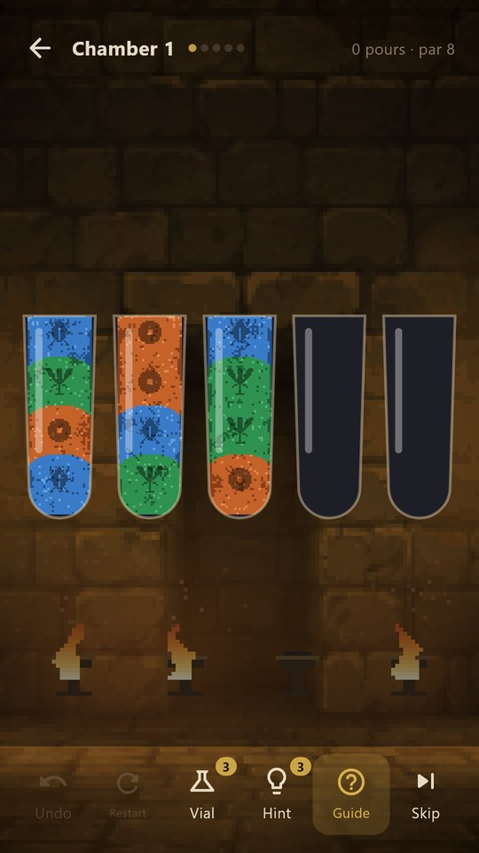
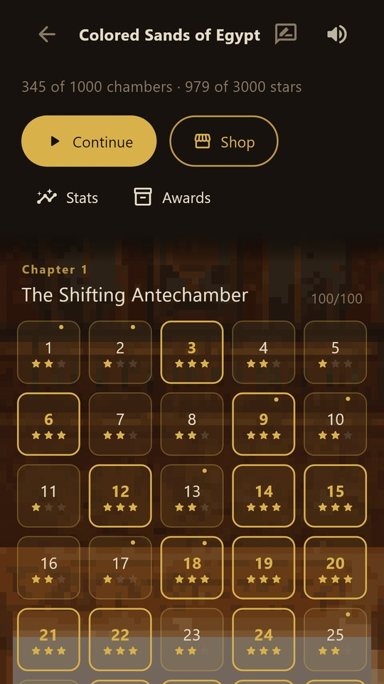
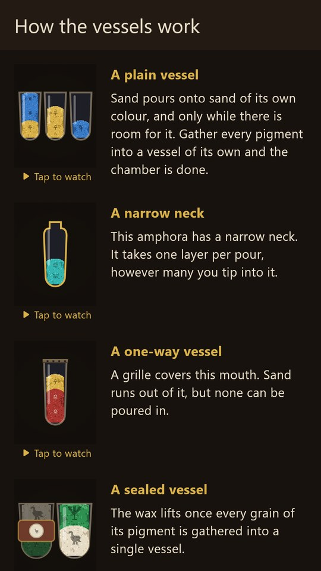
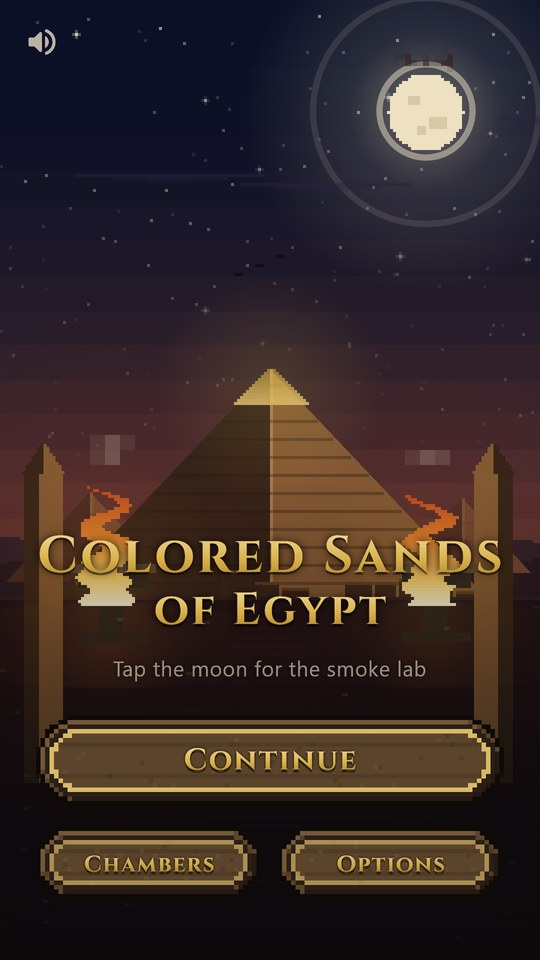
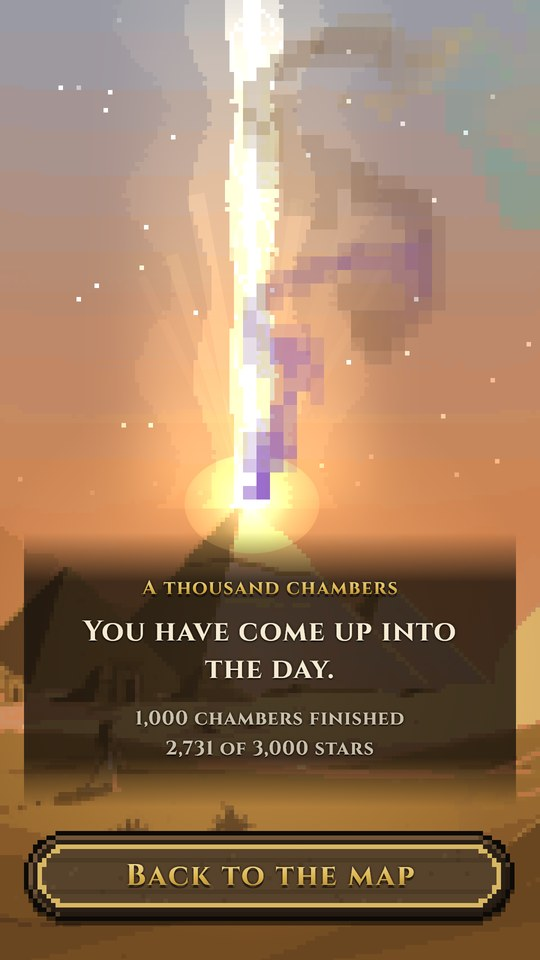

A sand-sorting puzzle for iPhone and Android
Pour the sands of Egypt until every pigment rests in a vessel of its own.
A thousand chambers under the necropolis, thirteen ways a vessel can surprise you, and nothing to lose: no lives, no timers, no move limits.
Undo and restart are free, forever. Two small purchases, each with a free way to the same thing. The whole of it, in one place.
Chamber 26, played through. Real footage, nothing staged.





How it plays
Sand settles only on sand of the same colour, and only where there is room for it. That is the whole of it.
Every chamber hands you vessels of layered, jumbled sand. Tip one into another and the top band pours across, as much as will fit. Gather every pigment into a vessel of its own and the chamber is done: the glass breaks, the colours rise in a turning column of dust, and the stone door opens on the next room.
The first hundred chambers teach thirteen ideas, one at a time, each on a chamber built to teach it. The nine hundred after that mix them, ten chapters deep, from the Shifting Antechamber to the House of Gold.
Thirteen mechanics
Each one arrives on a chamber that teaches it, is practised, and then joins the mix for good. By the end they are all on the board at once.
An amphora that takes one layer per pour, however much you tip into it.
A stone grille over the mouth. Sand runs out of it; nothing goes in.
Wax over the mouth until its pigment is gathered somewhere else on the board. What it was hiding is then yours to deal with.
Opens on a number, not a colour. Finish enough vessels and the binding lifts.
Tall and short on one board, so room is no longer the same everywhere.
Lined with pitch. It lets go of one layer at a time, and no more.
Buried under Nile silt. You cannot see what is under it until you move it.
A water clock. It pours from the bottom, so the layer you get is the one you have been ignoring.
A named order of layers. Build the name exactly and the seal breaks.
Two pigments named on one wax. Gather both, anywhere, and it opens.
The board is two halves. Every pour you make in one is made again in the other, if it is legal there.
A magnet that pulls the iron-red out of a blend as it falls, splitting purple back into carnelian and lapis. It is awake only while the jar wired to it is full, so you decide when it works.
Fires two pigments into a third. Malachite and natron become Egyptian blue, the way they actually did.
The dawn after chamber one thousand, with its music. Tap to play.
It has an ending
A thousand chambers down, and the tomb opens on a dawn: a beam from the capstone, and all the sand you ever sorted rising through it in bands of colour.
The sand is a real fluid. Put a finger in it and it moves out of the way, there and on every finished chamber, where the dust of the broken glass gathers into a turning column you can push about while you decide to move on.
The music is one playlist for the whole game, crossfading song to song and never restarting for a chamber, because being interrupted is the opposite of the point.
Fair play
Sorting puzzles stopped being fair. You pay twelve dollars to remove the adverts and they still charge you for the undo button. This one was built to be the other thing, and to say so before you install it.
Two purchases, each once and forever, and beside every one of them a free way to the same thing. Nothing is rationed to make you pay, and nothing is sold twice.
Adverts appear between chambers only, never over a puzzle, and never in the first eighteen chambers. When an aid runs out, the screen says all three ways to another one, every time, and the free one is never hidden.
The craft
The colours are the ones Egyptian painters ground, the rooms are drawn in cinematic pixel art for this game, and every sign on the sand is a real hieroglyph.
Each pigment carries its own hieroglyph, stamped on every band of sand, always. Nobody has to lose because of what their eyes make of red and green.
Storerooms, painted corridors, flooded halls and vaults of gold, each with its own fire and its own air.
Every chamber is solved by a machine before it ships. Nothing is impossible, every hint is a real move, and wrong moves are real too. Some chambers have exactly one solution.
Three stars for the shortest line, and never a punishment for a long one. Finishing is finishing.
Purple is carnelian and lapis, and its sand carries grains of both. Look closely and the lodestone's work is written on the board before it starts.
No account, no sign-in, no server, no analytics of ours. Your progress lives on your device and nowhere else.
Twelve languages
With the right script face for each. More are planned.
Help
The support page has these and more, in every language the game speaks.
Made in British Columbia, Canada, by one developer who got tired of being nickel-and-dimed by sorting games.
A bug, a chamber that felt unfair, a translation that reads oddly, a question about any of the above: admin@majorcomputing.ca, and a person reads it.